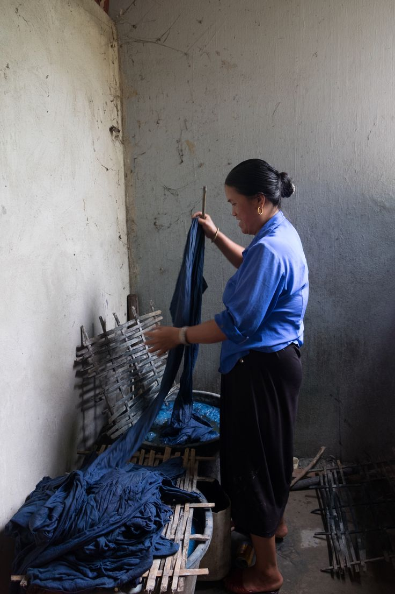
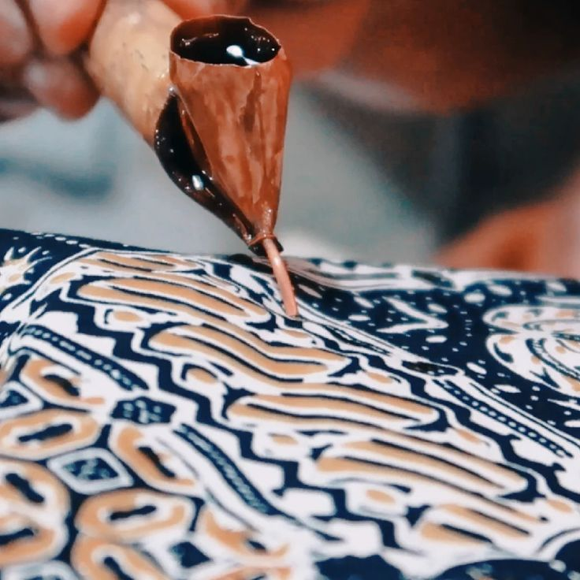
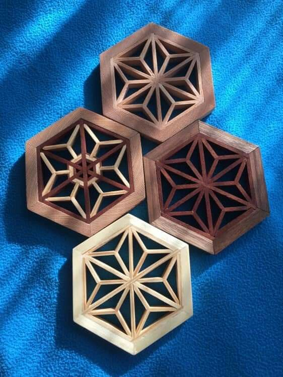
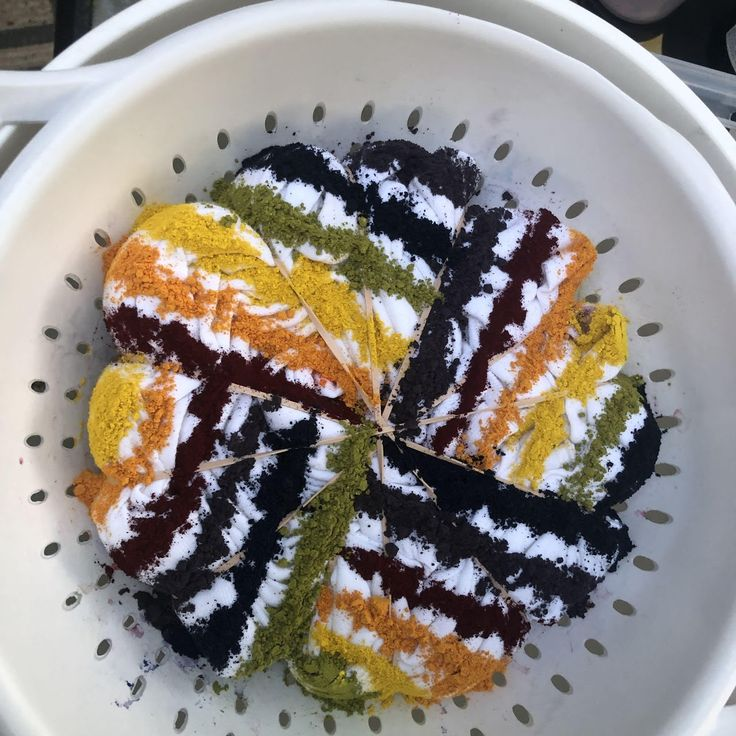
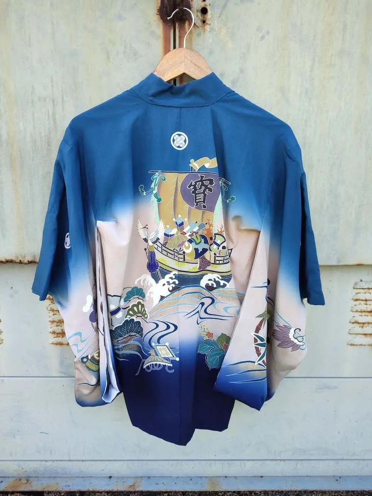

Where Water, Wax &
Wild Plants Collide.
We extract raw color from mountain roots, dried blossoms, and fermented indigo leaves to create limited-edition wearable art and museum tapestries.
The Natural Botanical Spectrum
Every pigment in our studio is brewed from single-origin botanical botanicals without synthetic petrochemical salts.
Sukumo Indigo 60°
Fermented in alkaline cedar barrels with dates and lime. Produces ethereal cyan mists up to deep midnight navy.
Five-Year Madder
Slow simmered at 65°C to yield rich terracotta, peach sunrise, and deep crimson wine tones on raw silk.
Marigold Turmeric
Solar-infused temple blossoms providing luminous sunny golds that resist degradation through tannin fixing.
Forest Weld & Iron
Two-stage over-dyeing technique producing earthy moss, jade green, and mineral teal reflections on heavy linen.
"Textiles Should Breathe the Atmosphere They Were Made In."
Industrial synthetic fast-fashion has flattened the human relationship with color. We create textiles that possess natural variation, botanical memory, and human intention.

Vat #04: Active Sukumo Indigo fermenting with raw sugarcane and mineral water.
The Three Atelier Study Tracks
Whether you are exploring resist geometry or ancient wax-canting, each pathway offers structured progression.

Batik Canting Wax
Molten virgin beeswax is drawn by hand using hand-forged copper canting needles, locking in delicate hairline crackles upon boiling.

Itajime & Arashi Shibori
Accordion folding clamped firmly with carved cherrywood blocks, or tightly wound onto poles to create storm-like wave repetitions.

Botanical Ice Crystallization
Pure melting ice melts over botanical dye powders, separating pigments into watercolor geode blooms and celestial galaxies.
Hand-Dyed Apparel Lookbook

Cerulean Haori Kimono
Hand-painted coastal wave motifs dipped 14 times in Sukumo indigo.
Solar Strata Overshirt
Foraged marigold and madder root dip with marbled wax-cracked selvedge.
Today's Active Fermentation Log
Our dye masters monitor the biological activity and temperature of our living fermentation barrels daily.
Reserve Your Seat at the Dye Vats
Sessions are capped at 8 participants to ensure individualized apprentice coaching.
Batik Basics: Molten Wax & Indigo
10:00 AM – 01:30 PM • All materials and take-home bandana included
Japanese Shibori & Itajime Clamp Lab
02:30 PM – 06:30 PM • Includes 100% Pure Mulberry Silk Scarf
Modern Ice Dye & Powder Dispersion
01:00 PM – 04:00 PM • Bring up to 2 personal cotton garments
Commission a Bespoke Story or Schedule a Studio Tour
Visit our walk-in swatch bar at 124 Artisan Alley or book a 15-minute consultation with Maya Lin.